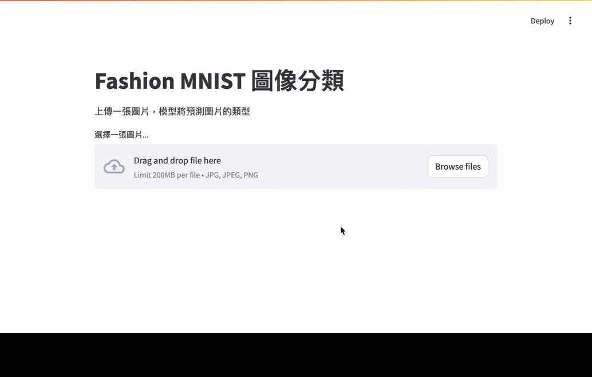

佈署模型
Table of Contents

1. Streamlit
Figure 1: Streamlit
Streamlit 是一個開源的 Python 框架，讓開發者可以簡單快速地構建和分享資料分析應用程式。無論是機器學習模型的部署、客製化的視覺化儀表板，還是軟體設計的原型展示，Streamlit 都能輕鬆應對。
Streamlit的優點:
- 簡單易用：
只需少量的 Python 代碼，就能創建出功能強大的應用程式。Streamlit 的 API 設計直觀，讓你可以專注於數據和邏輯，而不用擔心前端開發。 - 即時預覽：
在開發過程中，每次保存代碼變更後，應用會自動重新加載，快速看到修改效果。這大大提高了開發效率，讓你能夠即時調整和優化你的應用。 - 豐富的元件庫：
- Streamlit 提供了豐富的元件，如圖表、表格、文件上傳、滑動條、選擇框等，讓你可以輕鬆構建各種互動式的用戶界面。
- 支持與各種視覺化庫（如 Matplotlib、Plotly、Altair）的集成，讓你能夠創建精美的圖表和數據可視化。
- Streamlit 提供了豐富的元件，如圖表、表格、文件上傳、滑動條、選擇框等，讓你可以輕鬆構建各種互動式的用戶界面。
- 支持機器學習和數據科學：
- Streamlit 非常適合用來展示和部署機器學習模型。你可以輕鬆地將模型輸出嵌入到應用中，並提供交互式的界面來調整參數和查看結果。
- 支持各種機器學習框架，如 TensorFlow、PyTorch、Scikit-learn 等，讓你能夠快速將訓練好的模型應用到實際場景中。
- Streamlit 非常適合用來展示和部署機器學習模型。你可以輕鬆地將模型輸出嵌入到應用中，並提供交互式的界面來調整參數和查看結果。
- 客製化儀表板：
- 通過 Streamlit，你可以創建高度客製化的數據儀表板，實時顯示和更新數據分析結果，適合用於商業分析、研究報告等多種場景。
- 儀表板可以與數據庫或 API 集成，實現數據的實時更新和監控。
- 通過 Streamlit，你可以創建高度客製化的數據儀表板，實時顯示和更新數據分析結果，適合用於商業分析、研究報告等多種場景。
- 輕鬆部署和分享：
- Streamlit 應用可以很方便地部署到本地或雲端服務器，甚至可以使用 Streamlit 提供的分享平台來發佈你的應用，讓全球用戶都能訪問。
- 支持 Docker 化部署，讓你可以在不同環境中快速上線應用。
- Streamlit 應用可以很方便地部署到本地或雲端服務器，甚至可以使用 Streamlit 提供的分享平台來發佈你的應用，讓全球用戶都能訪問。
- 原型設計和展示：
Streamlit 是展示軟體設計原型的理想工具。你可以快速搭建原型，進行用戶測試和反饋收集，從而加速產品開發流程。
2. 簡易的Streamlit範例
2.1. 下載範例程式
- 底下的檔案可以透過以下方式下載(於終端機執行)
1: git clone git@github.com:letranger/modelDeploy.git
2.2. 範例
2.2.1. 安裝所需套件
1: cd modelDeploy 2: pip3 install -r requirements.txt
2.2.2. 下載訓練好的模型
請自行訓練好你的模型
2.2.3. 簡易的參考程式
1: import tensorflow as tf 2: from tensorflow.keras.models import Sequential 3: from tensorflow.keras.layers import Conv2D, MaxPooling2D, Flatten, Dense 4: import streamlit as st 5: from PIL import Image, ImageOps 6: import numpy as np 7: 8: # 定義類別標籤 9: class_labels = [ 10: 'T-shirt/top', 'Trouser', 'Pullover', 'Dress', 'Coat', 11: 'Sandal', 'Shirt', 'Sneaker', 'Bag', 'Ankle boot' 12: ] 13: 14: # 重建模型架構 15: def build_model(): 16: model = Sequential() 17: model.add(Conv2D(filters=32, kernel_size=2, activation='relu', input_shape=(28,28,1))) 18: model.add(MaxPooling2D(pool_size=2)) 19: model.add(Flatten()) 20: model.add(Dense(10, activation='softmax')) 21: return model 22: 23: # 創建並加載權重 24: model = tf.keras.models.load_model('/Users/letranger/Downloads/fm_model.h5') 25: model.compile(optimizer='adam', loss='sparse_categorical_crossentropy', metrics=['accuracy']) 26: 27: # 定義圖像預處理和預測函數 28: def preprocess_and_predict(image): 29: # 轉換圖像為灰度圖 30: gray_image = ImageOps.grayscale(image) 31: # 調整圖像大小為 28x28 32: resized_image = gray_image.resize((28, 28)) 33: # 將圖像轉換為數組 34: image_array = np.array(resized_image) 35: # 正規化像素值 36: image_array = image_array / 255.0 37: # 添加批次維度 38: image_array = np.expand_dims(image_array, axis=0) 39: image_array = np.expand_dims(image_array, axis=-1) 40: # 使用模型進行預測 41: predictions = model.predict(image_array) 42: predicted_class = np.argmax(predictions, axis=1) 43: return class_labels[predicted_class[0]], gray_image, resized_image 44: 45: # Streamlit 應用 46: st.title('Fashion MNIST 圖像分類') 47: st.write('上傳一張圖片，模型將預測圖片的類型') 48: 49: # 上傳圖片 50: uploaded_file = st.file_uploader("選擇一張圖片...", type=["jpg", "jpeg", "png"]) 51: 52: if uploaded_file is not None: 53: image = Image.open(uploaded_file) 54: st.image(image, caption='上傳的圖片', use_column_width=True) 55: st.write("") 56: 57: # 圖像預處理和預測 58: label, gray_image, resized_image = preprocess_and_predict(image) 59: 60: st.write("灰階圖像:") 61: st.image(gray_image, caption='灰階圖像', use_column_width=True) 62: 63: st.write("調整大小的圖像 (28x28):") 64: st.image(resized_image, caption='調整大小的圖像', use_column_width=False) 65: 66: st.write(f'預測結果: {label}')
2.2.4. 範例程式執行方式
1: streamlit run main.py
3. 佈署成果

Figure 2: 超廢圖像分類系統